吉布斯自由能–組成圖與二元系統相圖
第九章建立了溶液熱力學的理論基礎——活性、理想溶液、正規溶液模型。第十章是應用章節：展示如何使用 $G$–$x$ 曲線（吉布斯自由能對組成的圖）來建構和詮釋二元相圖。核心工具是共切線法則（Common Tangent Rule）——兩相平衡對應於兩條 $G$–$x$ 曲線的共切線，切點給出平衡相的組成。這使我們能夠從純熱力學數據「計算」出相圖，而不只是「觀察」它。
在本章中，我們將學習：
- $G$–$x$ 曲線的幾何意義——截距給出化學位，曲率決定穩定性
- 共切線法則——兩相平衡條件 $\mu_A^\alpha = \mu_A^\beta$、$\mu_B^\alpha = \mu_B^\beta$ 的圖形詮釋
- 三種基本二元相圖——完全互溶、共晶、混溶間隙——的 $G$–$x$ 曲線起源
- 正規溶液模型在相圖計算中的應用：$\Omega$、$T_c$、和相邊界
- 液相和固相標準態的選擇對 $G$–$x$ 曲線的影響
🧭 本章推理地圖
- 自由能曲線：先把每個相寫成 $G^\phi(x,T)$，化學位是切線截距。
- 穩定性判讀：最低自由能包絡線決定穩定相；曲率決定均勻相是否抗組成漲落。
- 兩相平衡：共切線同時滿足 $\mu_A^\alpha=\mu_A^\beta$ 與 $\mu_B^\alpha=\mu_B^\beta$。
- 相圖建構：隨溫度重複共切線，切點軌跡形成液相線、固相線、binodal 與共晶/包晶反應線。
10.1–10.2 導論：$G$–$x$ 曲線與化學位的幾何意義
- $G$–$x$ 曲線把溶液熱力學轉成可視化的相穩定性問題。
- 切線截距給出各成分化學位，是共切線法的幾何基礎。
- 曲線凹凸與斜率共同決定相是否穩定、是否會分相。
對於一個二元系統，在定溫定壓下，吉布斯自由能是組成的函數：$G = G(x_B)$。這條曲線包含了決定相行為的所有熱力學資訊。
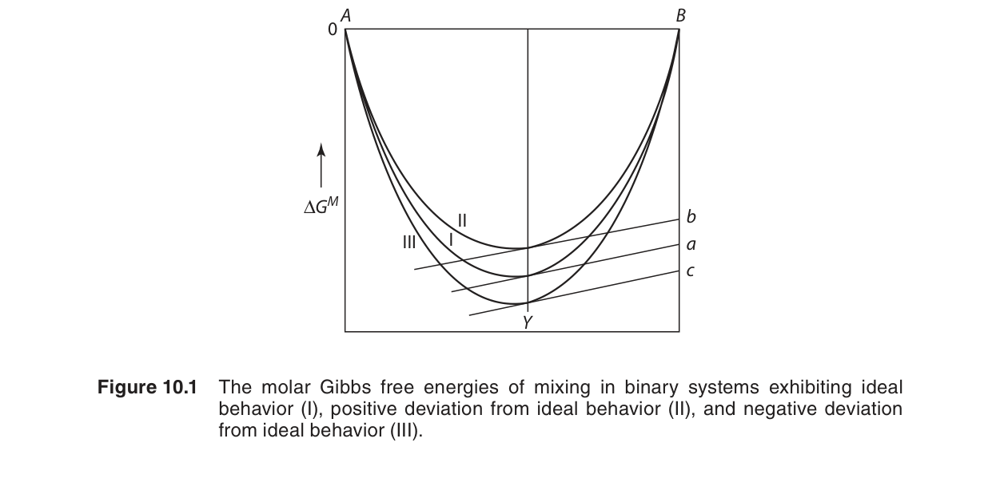
化學位可以從 $G$–$x$ 曲線的幾何構造中直接讀出。在任意組成 $x_B$ 處，畫一條切線——這條切線在 $x_B = 0$（純 A）和 $x_B = 1$（純 B）軸上的截距就是 $\mu_A$ 和 $\mu_B$：
這個「截距法」極其有用：
- 對於純 A（$x_B = 0$）：$\mu_A = G_A^\circ$（純 A 的 $G$），$\mu_B$ 為有限值（但在此極限下 $x_B \to 0$，$\mu_B \to -\infty$ 如 $RT\ln x_B$）
- 對於理想溶液：$G = x_A G_A^\circ + x_B G_B^\circ + RT(x_A\ln x_A + x_B\ln x_B)$，代入截距公式可得 $\mu_A = G_A^\circ + RT\ln x_A$——完全符合預期。
例題 10.1：從切線判斷化學位變化
在某組成處畫 $G$–$x$ 切線，若切線在 B 端截距隨加入 B 而升高，代表 $\mu_B$ 增加。
$\mu_B$ 增加表示再加入 B 的自由能代價變大。
這常出現在 B 原子與 A 基體交互作用不利、活性係數上升的系統。
10.2A 化學位截距公式的推導
- 截距公式由偏莫耳自由能與 Gibbs–Duhem 關係推出。
- $dG_m/dx_B=\mu_B-\mu_A$ 是曲線斜率的熱力學意義。
- 同一條切線的兩端截距分別代表 $\mu_A$ 與 $\mu_B$。
截距公式（10.1）可以從偏莫耳量的定義嚴格導出。對於二元溶液 A–B，總吉布斯自由能可以寫為各成分化學位的加權和：
其中 $n_A$ 和 $n_B$ 是莫耳數。對 (10.1a) 取全微分：
但 Gibbs–Duhem 關係告訴我們，在定溫定壓下：
因此 (10.1b) 化簡為：
將組成用莫耳分數表達：$x_B = n_B/(n_A+n_B)$，$n = n_A+n_B$。則 $n_A = n(1-x_B)$，$n_B = n x_B$。固定總莫耳數 $n$（即 $dn = 0$），有 $dn_A = -n\,dx_B$，$dn_B = n\,dx_B$。代入 (10.1d)：
所以：
令 $G_m = G/n$ 為莫耳吉布斯自由能，則：
結合 $G_m = (1-x_B)\mu_A + x_B\mu_B$，解出 $\mu_A$ 和 $\mu_B$：
這就完成了截距公式的嚴格導出。其幾何意義非常清晰：在 $G_m$–$x_B$ 圖上，任意點 $(x_B, G_m)$ 處的切線斜率是 $dG_m/dx_B = \mu_B - \mu_A$，而該切線在 $x_B=0$ 和 $x_B=1$ 的截距分別為 $\mu_A$ 和 $\mu_B$。
例題 10.2：為什麼共切線代表兩個化學位都相等？
同一條共切線在 A 端只有一個截距，所以兩相的 $\mu_A$ 相同。
同一條線在 B 端也只有一個截距，所以兩相的 $\mu_B$ 相同。
這就是共切線同時滿足兩個成分相平衡條件的原因。
10.3–10.4 常見二元相圖類型與標準態
- 二元相圖類型源自液相與固相 $G$–$x$ 曲線的相對位置。
- 完全互溶、共晶、包晶與混溶間隙都可由共切線與自由能包絡線理解。
- 液相與固相標準態選擇會改變曲線相對高度，必須一致處理。
定性上，二元相圖的形狀完全由液相和固相的 $G$–$x$ 曲線的相對位置決定。三種最基本的類型：
1. 完全互溶系統（Isomorphous）
液相和固相的 $G$–$x$ 曲線都是簡單的 U 形（$\Omega_{\text{liq}}$ 和 $\Omega_{\text{sol}}$ 都小於臨界值）。兩條曲線在不同的溫度範圍內交叉——在高溫時液相的 $G$ 最低（所有組成下液態穩定），在低溫時固相的 $G$ 最低。中間溫度時，存在一個組成範圍內兩相共存——由共切線決定。
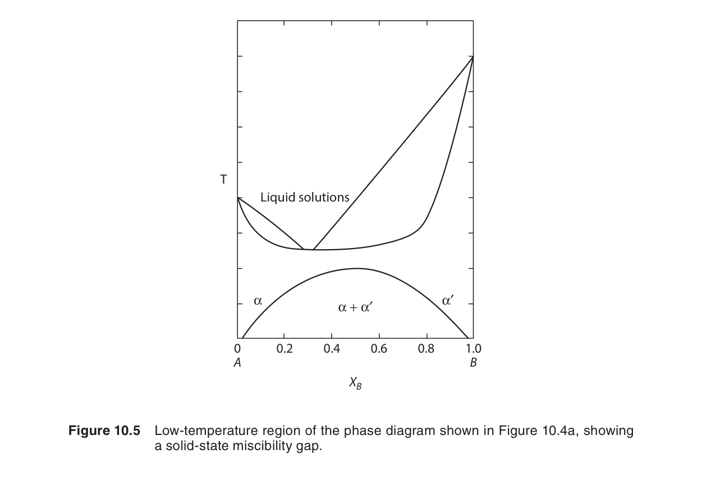
經典例子：Cu–Ni（銅–鎳）、Ag–Au（銀–金）、Mo–W（鉬–鎢）。這些系統中兩種原子的晶體結構相同、原子半徑相近、化學性質相似，因此無論液態還是固態都能完全互溶。
2. 共晶系統（Eutectic）
液相 $G$–$x$ 曲線為簡單 U 形，但固相的 $G$–$x$ 曲線有很高的 $\Omega_{\text{sol}} > 0$——在全組成範圍內，固相的 $G$ 都很高（因為異類原子尺寸或化學性質不匹配）。液相在組成範圍的中間部分「勝出」到遠低於純成分熔點的溫度。這導致 V 形液相線在共晶點交匯。
經典例子：Pb–Sn（鉛–錫，焊料）、Al–Si（鋁–矽，鑄造合金）、Fe–C（鐵–碳，在 1147°C 的萊氏體反應）。共晶反應：$L \rightleftharpoons \alpha + \beta$。
3. 包晶系統（Peritectic）
當固相有較大的負混合焓（$\Omega < 0$）時，可能會出現包晶反應。在包晶溫度，液體和一個固相反應生成另一個固相：$L + \alpha \rightleftharpoons \beta$。
經典例子：Fe–C（鐵–碳，1495°C 的包晶反應）、Pt–Ag（鉑–銀）、Cu–Zn（銅–鋅，黃銅）。
4. 混溶間隙（Miscibility Gap）
當 $\Omega > 2RT$ 時，固相（或液相）的 $G$–$x$ 曲線出現雙凹形狀——在中間組成，$\partial^2 G/\partial x^2 < 0$。這意味著均勻溶液不穩定——它會自發分為兩個不同組成的相（由共切線的兩個切點給出）。這是第九章正規溶液模型的直接應用。
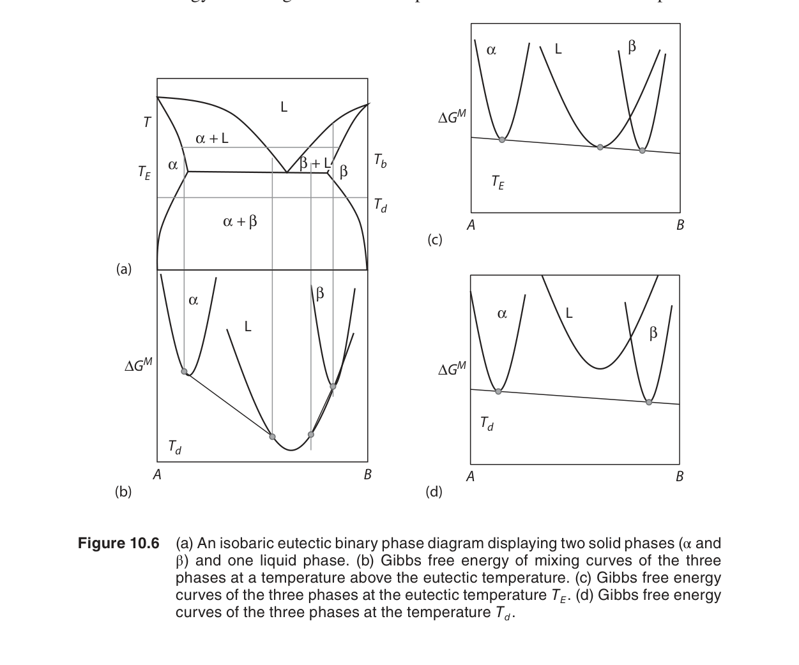
經典例子：Al–Zn（鋁–鋅，室溫附近）、Cu–Co（銅–鈷）、Fe–Cu（鐵–銅）、以及許多氧化物和聚合物混合物。
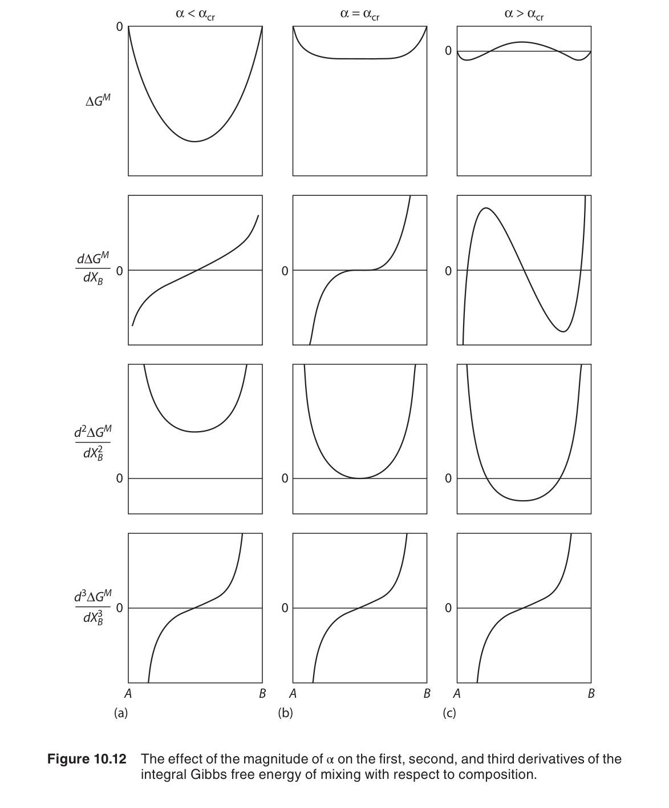
標準態的選擇
在繪製 $G$–$x$ 曲線時，標準態的選擇至關重要。如果液相和固相使用不同的標準態，兩條 $G$–$x$ 曲線的相對位置會發生位移。通常，液相的標準態選為純液態成分，固相的標準態選為純固態成分——兩者之差就是熔化自由能 $\Delta G_{\text{fus}}(T)$。這決定了 $G$–$x$ 曲線在純成分端的間距。
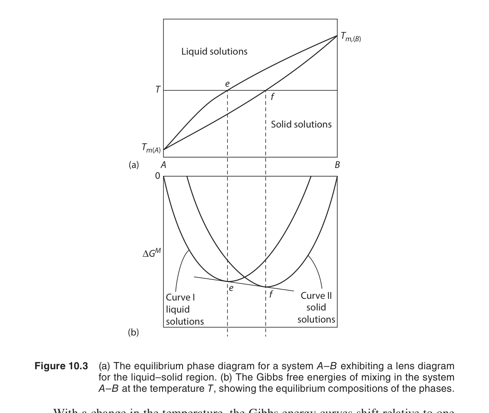
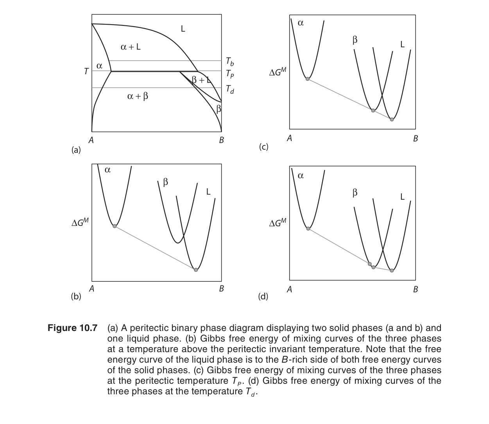
例題 10.3：為什麼 Pb–Sn 會有共晶點？
液相在中間組成有較低自由能，而兩個固相互溶度有限。
降溫時液相穩定區被兩側固相夾住，最低自由能包絡線形成 V 形液相線。
兩條液相線交會處就是液體同時與兩固相平衡的共晶點。
10.5–10.6 正規溶液的相穩定性準則
- $\partial^2G/\partial x^2$ 的符號決定均勻相對小組成漲落的穩定性。
- 正規溶液 spinodal 曲線為 $T_s=2\Omega x(1-x)/R$。
- Binodal 與 spinodal 區分成核成長與自發 spinodal 分解。
對於正規溶液，我們可以從第九章的結果精確推導相穩定性的條件。$\Delta G_{\text{mix}}$ 曲線的穩定性由其二階導數決定。回顧第九章中正規溶液的混合自由能：
對 $x_B$ 求二階導數（令 $x_A = 1 - x_B$）：
或等價地：
穩定性判據：
- $\partial^2 G/\partial x^2 > 0$：溶液對組成漲落穩定——均勻相
- $\partial^2 G/\partial x^2 < 0$：溶液對組成漲落不穩定——自發分相（spinodal 分解）
- $\partial^2 G/\partial x^2 = 0$：定義了 spinodal 曲線——穩定與不穩定的邊界
對於對稱的正規溶液（$\Omega$ 與組成無關），spinodal 曲線的解析形式為：
這是一條拋物線，在 $x_B = 0.5$ 處達到最高點 $T_s = \Omega/2R$——這恰好是臨界溫度 $T_c$。在 $T_s$ 以下，中間組成區域不穩定。
Binodal（共存曲線）由共切線條件決定，位於 spinodal 外部。在 binodal 和 spinodal 之間，溶液處於亞穩（metastable）狀態——對小漲落穩定，但可以通過成核–成長機制分相。
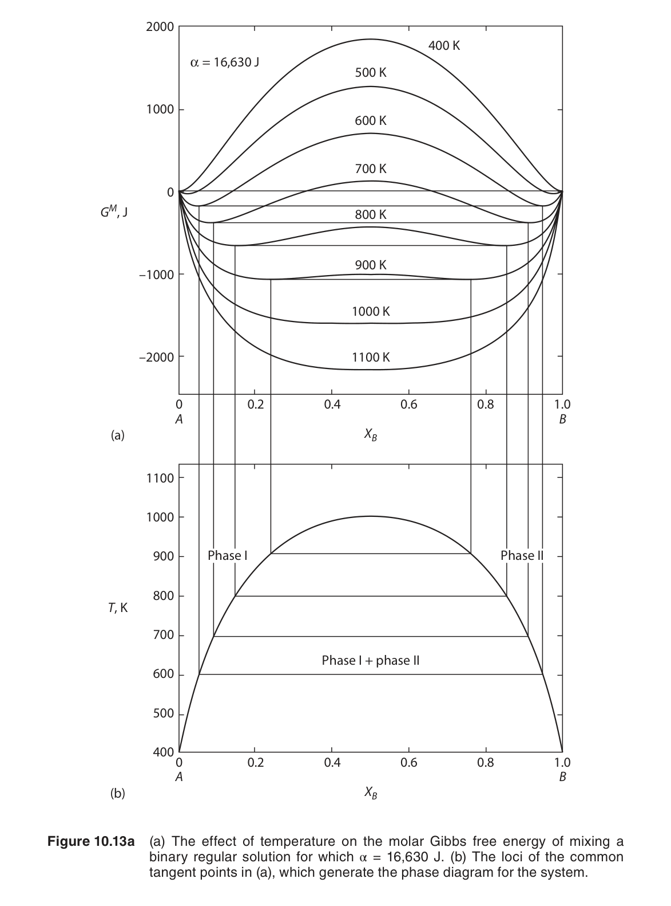
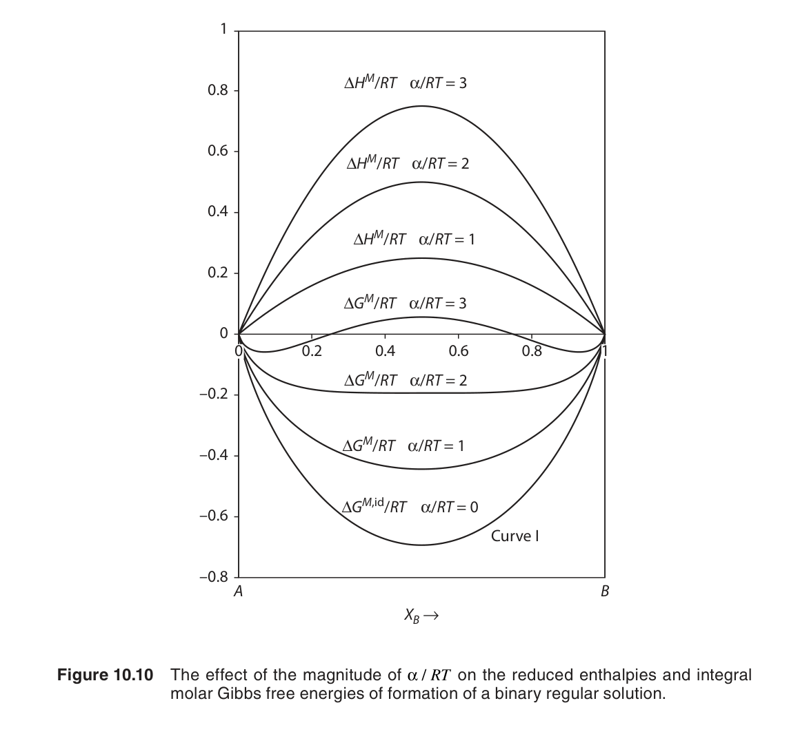
例題 10.5：判斷均勻相是否 spinodal 不穩定
對稱正規溶液在 $x=0.5$ 時，$\partial^2G/\partial x^2=-2\Omega+4RT$。
若 $\Omega=20\ \text{kJ/mol}$、$T=800\ \text{K}$，則 $4RT\approx26.6\ \text{kJ/mol}$，曲率約 $-13.4\ \text{kJ/mol}<0$。
此組成在該溫度下位於 spinodal 不穩定區。
10.5A 混溶間隙與臨界條件的完整推導
- 臨界條件來自自由能曲線在臨界組成處的高階平坦化。
- 對稱正規溶液有 $x_c=0.5$ 與 $T_c=\Omega/(2R)$。
- $T_0$ 曲線描述無成分變化相變的熱力學上限。
本節對混溶間隙的臨界條件進行完整的數學推導，展示 $\Omega_c = 2RT_c$ 的來源。
臨界點條件
在臨界點，binodal 和 spinodal 重合。數學上，這要求：
從 (10.2b) 出發，令其二階導數為零：
這是 spinodal 曲線。再求三階導數：
令其為零：$-RT(1-2x_B)/[x_B^2(1-x_B)^2] = 0$，解得 $x_B = 0.5$。
代入 (10.4c)：
反解 $\Omega$：
這就是正規溶液模型給出的臨界交互作用參數。如果系統的 $\Omega > 2RT_c$，就會出現混溶間隙。
數值實例
| 系統 | $\Omega$ (kJ/mol) | $T_c$ (K) | $2RT_c$ (kJ/mol) | 實際行為 |
|---|---|---|---|---|
| Cu–Ni | ≈ 0 (近似理想) | — | — | 完全互溶 |
| Al–Zn | ~13 | ~620 | ~10.3 | $\Omega > 2RT_c$ → 混溶間隙 |
| Au–Pt | ~20 | ~1150 | ~19.1 | $\Omega > 2RT_c$ → 高溫混溶間隙 |
Binodal（共存曲線）的求解
Binodal 由共切線條件決定。對於對稱正規溶液，由於曲線對稱於 $x_B=0.5$，平衡的兩相組成 $x_B^\alpha$ 和 $x_B^\beta$ 滿足 $x_B^\alpha + x_B^\beta = 1$。共切線條件給出：
對於正規溶液，$\mu_B - \mu_A = (G_B^\circ - G_A^\circ) + \Omega(1-2x_B) + RT\ln[x_B/(1-x_B)]$。
利用對稱性 $x_B^\beta = 1 - x_B^\alpha$，可以得到：
這是一個超越方程，需要數值求解。在 $T$ 接近 $T_c$ 時，binodal 近似為：
這是典型 mean-field 臨界指數 $1/2$ 的體現。
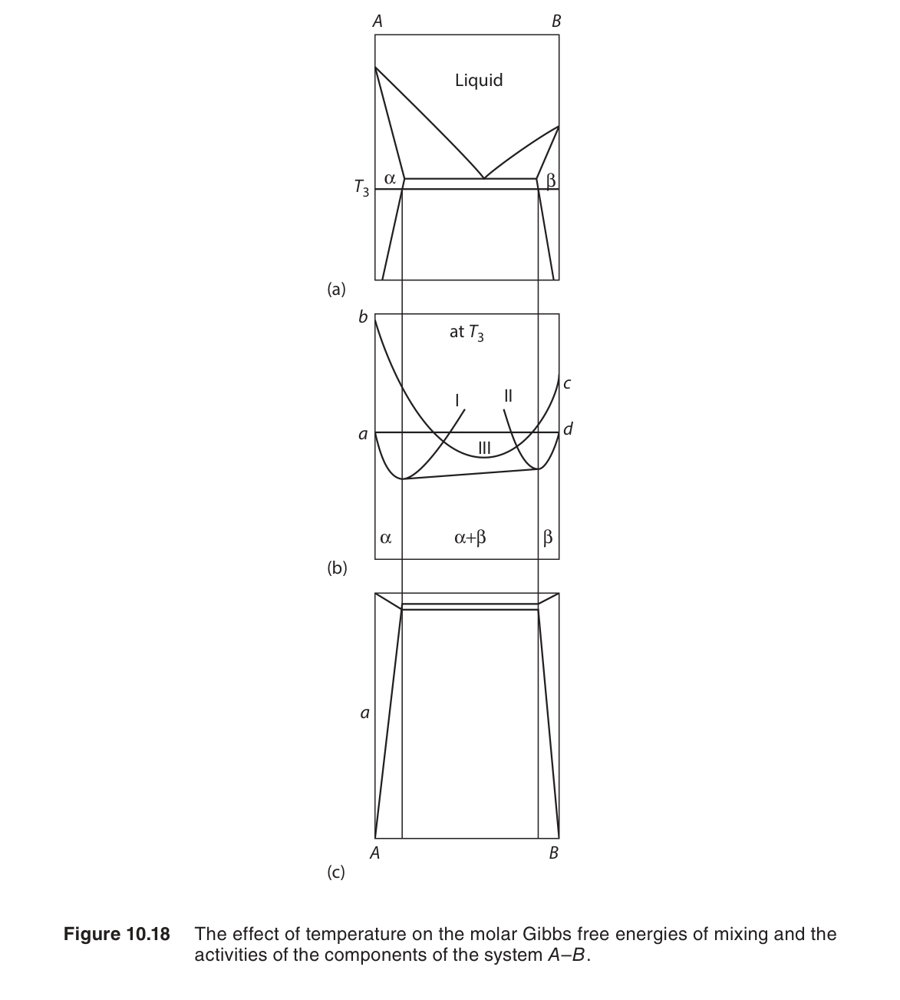
例題 10.5A：用 $T_c=\Omega/2R$ 估算臨界溫度
若某對稱固溶體 $\Omega=12\ \text{kJ/mol}$，則 $T_c=12000/(2\times8.314)\approx722\ \text{K}$。
高於 722 K 時，混合熵足以穩定單相；低於此溫度時可能出現混溶間隙。
實際系統若不對稱，臨界組成會偏離 0.5。
10.7–10.8 從 $G$–$x$ 曲線建構相圖
- 相圖邊界是不同溫度下共切線切點的軌跡。
- 最低 $G$ 包絡線決定真正穩定的單相或兩相組合。
- CALPHAD 的核心就是以參數化 $G^\phi(x,T)$ 自動執行這個幾何最小化。
這是最終的綜合步驟。對於一個二元系統，在任何給定溫度 $T$：
- 繪製所有可能相的 $G$–$x$ 曲線（液相、固相 $\alpha$、固相 $\beta$……）
- 找出最低的 $G$ 包絡線——在所有 $x_B$ 處，最穩定的狀態是 $G$ 最低的那個（或那幾個相的混合物）。
- 如果存在兩相共存區，畫出共切線——兩個切點就是該溫度下的平衡相組成。
- 在不同溫度重複——將共切線切點的組成對溫度作圖，就是相圖的邊界。
這整套流程可以完全自動化（現代 CALPHAD 軟體就是這樣做的），但理解其背後的幾何原理至關重要——否則你只是在點擊按鈕，而不理解輸出結果的物理意義。
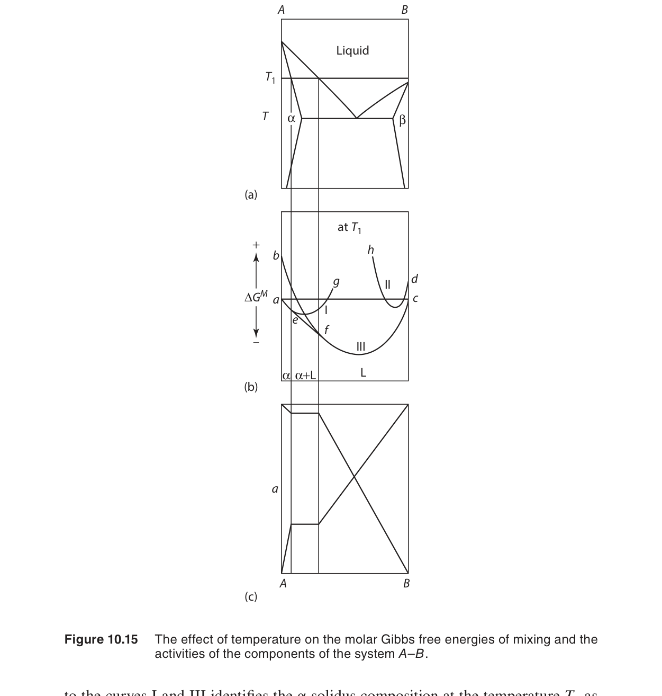
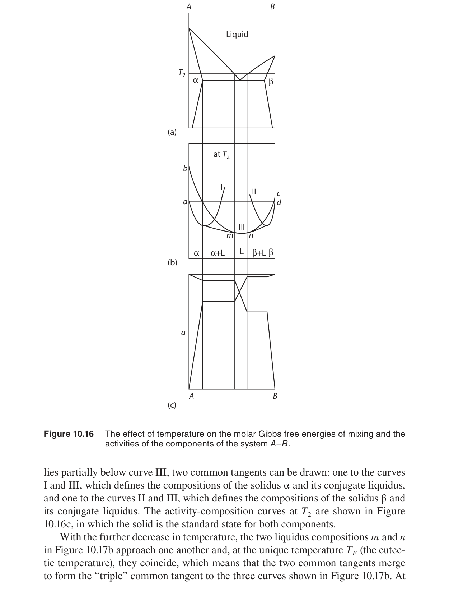
共切線條件的嚴格推導
當兩相 $\alpha$ 和 $\beta$ 在定溫定壓下平衡時，對每一個成分，化學位必須相等：
從截距公式 (10.1)，$\mu_A$ 和 $\mu_B$ 分別是 $G$–$x$ 曲線上 $x_B=0$ 和 $x_B=1$ 處的切線截距。因此，兩個切點 $(x^\alpha, G^\alpha)$ 和 $(x^\beta, G^\beta)$ 在相同的直線上（共切線），當且僅當：
這兩個條件等價於以下兩個幾何條件：
即：兩點連線的斜率等於各自曲線在該點的切線斜率。這是共切線法則的標準表述。
數值實例：正規溶液共晶系統
考慮一個假想二元系統：液相互溶（$\Omega_{\text{liq}} \approx 0$），固相有正混合焓（$\Omega_{\text{sol}} = +20\ \text{kJ/mol}$）。純 A 的熔點 $T_A = 1200\ \text{K}$，純 B 的熔點 $T_B = 900\ \text{K}$。熔化熵取 Richard 規則值 $\Delta S_{\text{fus}} \approx R$。
在 800 K（低於兩個純成分的熔點），固相的 $G$ 在純 A 和純 B 端低於液相——但中間組成處，固相的 $G$–$x$ 由於 $\Omega_{\text{sol}} > 0$ 而向上彎曲，液相的 $G$ 反而更低。這導致典型的 V 形共晶相圖——共晶點估計在約 600 K、$x_B \approx 0.4$。
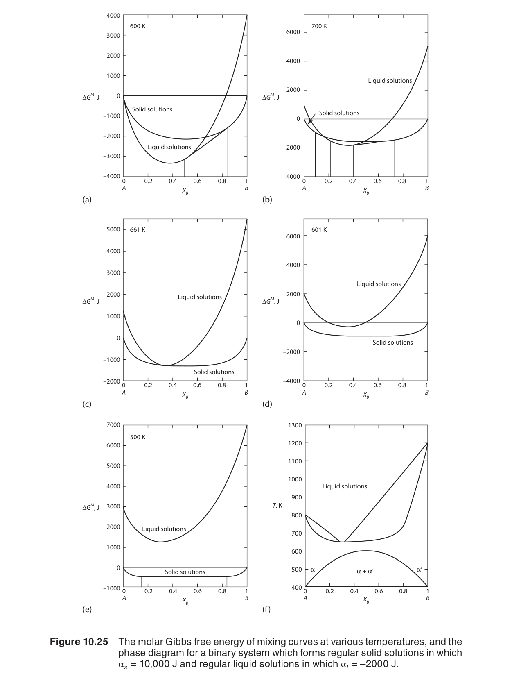
例題 10.7：如何由一條共切線讀兩相比例？
若共切線切點為 $x_\alpha=0.2$、$x_\beta=0.8$，而合金總組成 $x_0=0.5$。
槓桿法給 $f_\alpha=(x_\beta-x_0)/(x_\beta-x_\alpha)=0.3/0.6=0.5$。
這代表兩相比例各半，但相組成仍分別是 0.2 與 0.8。
10.7A 液相線與固相線的計算：正規溶液模型
- 液相線與固相線可由液相/固相化學位相等條件求得。
- 純成分熔化自由能提供液相與固相曲線在端點的相對位移。
- 正規溶液模型把相界線計算化為耦合非線性方程。
本節展示如何從正規溶液模型定量計算液–固相邊界。
問題設定
考慮一個二元系統 A–B，其中：
- 液體為理想溶液，$\Omega_{\text{liq}} = 0$
- 固體為正規溶液，$\Omega_{\text{sol}} = \Omega_0$
- 純 A 的熔點 $T_{m,A}$，熔化熵 $\Delta S_{\text{fus},A}$
- 純 B 的熔點 $T_{m,B}$，熔化熵 $\Delta S_{\text{fus},B}$
液相吉布斯自由能
固相吉布斯自由能
兩者之差涉及純成分的熔化自由能：
其中採用了近似 $\Delta H_{\text{fus}}$ 和 $\Delta S_{\text{fus}}$ 與溫度無關。
平衡條件
在液相線和固相線上，液–固兩相平衡，滿足共切線條件：
代入化學位表達式：
整理得到一組耦合超越方程：
對給定的 $x_{\text{sol}}$，可以數值求解 $x_{\text{liq}}$ 和 $T$。這就是 CALPHAD 核心計算的簡化版。
極限情況
- 理想系統（$\Omega_0 = 0$）：方程簡化為 $x_{\text{liq}}$ 和 $x_{\text{sol}}$ 透過熔化自由能直接關聯。這是標準的液–固理想溶液模型。
- 稀釋極限（$x_B \ll 1$）：液相線斜率由 van't Hoff 關係給出 $dT/dx_{\text{B}} \approx RT_m^2/\Delta H_{\text{fus}}$。
- 共晶極限：當 $\Omega_0$ 足夠大時，兩個固相溶解度極限在低溫相交，形成共晶點。
例題 10.7A：液相線計算需要哪些輸入？
至少需要純 A、純 B 的熔點與熔化熵，液相與固相的混合模型，以及交互作用參數。
給定溫度後，解 $\mu_A^L=\mu_A^S$ 與 $\mu_B^L=\mu_B^S$ 可得到液相與固相組成。
對多個溫度重複，即可畫出 liquidus 與 solidus。
🔗 跨章節聯繫：從單組元到多組元相圖
- Ch10 把 Ch7 純物質相平衡與 Ch9 溶液自由能合併為二元相圖。
- 共切線觀念可延伸到反應系統、優勢區圖與多元相穩定性計算。
- 相圖不只是資料圖，而是 Gibbs 自由能最小化的投影。
本章的內容不是孤立的——它建立在之前章節的基礎上，並為後續章節鋪平道路。以下是主要的跨章連結：
與第七章（Clapeyron 方程與單組元相圖）的聯繫
第七章（Ch7）介紹了單組元系統的相平衡——Clapeyron 方程 $dP/dT = \Delta S/\Delta V$ 描述了純物質的相邊界。我們在第十章中遇到的每個二元相圖都「繼承」了其純成分的單組元相圖特徵：
- 純 A 和純 B 的熔點 $T_{m,A}$、$T_{m,B}$ 是二元相圖的錨點——共晶和包晶溫度由這些純成分熔點和交互作用參數共同決定。
- 熔化自由能 $\Delta G_{\text{fus}}(T) = \Delta H_{\text{fus}} - T\Delta S_{\text{fus}}$ 直接來自 Clapeyron 關係對液–固平衡的積分（Ch7 §7.4）。
- 在二元相圖的邊界（純 A 或純 B 附近），相邊界斜率可以與 Clapeyron 方程的推廣形式——van't Hoff 關係——連結。
與第九章（溶液熱力學）的聯繫
第九章是第十章最直接的理論基礎。以下是從第九章「繼承」的核心概念：
- 正規溶液模型（Ch9 §9.5）：$\Delta G_{\text{mix}} = \Omega x_A x_B + RT(x_A\ln x_A + x_B\ln x_B)$ 是第十章的「原料」。第十章中所有 $G$–$x$ 曲線都基於這個表達式（或其推廣形式）。
- 活性與活度係數（Ch9 §9.2–9.3）：$\mu_i = \mu_i^\circ + RT\ln a_i$。活性 $a_i$ 偏離理想值的程度決定了 $G$–$x$ 曲線偏離理想曲線的程度，進而決定相圖形狀。
- 偏莫耳量與 Gibbs–Duhem 方程（Ch9 §9.1）：化學位截距法（10.1）和共切線條件（10.5）都是 Gibbs–Duhem 方程的直接應用。
- Richard 規則（Ch9 §9.6）：許多金屬的熔化熵 $\Delta S_{\text{fus}} \approx R$（或更準確地，約 8–10 J/mol·K），這簡化了相圖計算。
與第十三章（反應系統的相穩定性）的聯繫
第十三章（Ch13）將相圖的概念推廣到化學反應系統：
- 在第十章中，我們討論了物理平衡——液–固、液–液、固–固相變，不涉及化學反應。
- 在第十三章中，引入了化學反應的平衡——例如氧化物、硫化物的還原反應。$G$–$x$ 曲線推廣為 $G$–組成圖，其中「成分」包括化合物。
- 第十章中的共切線法在第十三章中推廣為優勢區圖（Predominance Diagram）和相穩定性圖（Phase Stability Diagram）——在 $T$ 和 $P$ 或 $T$ 和化學位空間中繪製穩定相區域。
- 混合焓 $\Omega$ 的概念在第十三章中推廣為化合物的生成自由能 $\Delta G_f^\circ$。
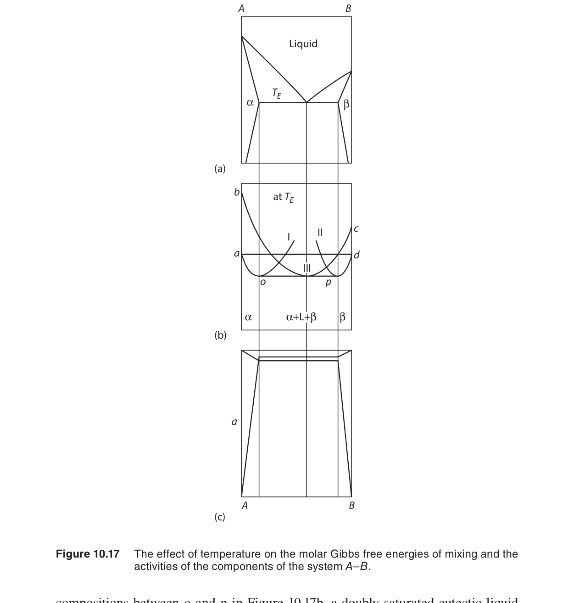
- Ch7：單組元相圖 ← Clapeyron 方程（$dP/dT$）
- Ch9：溶液熱力學 ← 活性、正規溶液模型（$\Omega$、$\Delta G_{\text{mix}}$）
- Ch10：二元相圖 ← 共切線法 + $G$–$x$ 曲線 ← 當前章節
- Ch13：反應系統相穩定性 ← 優勢區圖、化學位空間
例題 10.X：從二元相圖過渡到氧化物穩定圖
在二元合金中，共切線比較不同相的 $G(x)$。
在氧化物穩定圖中，則比較不同氧化態相在氧化學位或氧分壓下的自由能。
兩者都是找最低自由能，只是橫軸從組成換成化學位或氣氛變數。
常見誤區
自我檢核
檢核 1：共切線同時代表哪兩個條件？
代表 $\mu_A^\alpha=\mu_A^\beta$ 與 $\mu_B^\alpha=\mu_B^\beta$，也就是兩個成分在兩相中的化學位都相等。
檢核 2：為什麼正規溶液會有混溶間隙？
當正的 $\Omega$ 大到壓過混合熵時，$G(x)$ 在中間組成出現雙井或負曲率，均勻相不再是最低自由能狀態。
檢核 3：相圖兩相區內如何求相比例？
先讀 tie-line 兩端相組成，再用槓桿法由整體組成求兩相比例。
檢核 4：CALPHAD 的核心輸入是什麼？
各相的參數化 Gibbs 自由能函數 $G^\phi(x,T)$，包含純物質項、理想混合項與超額項。
延伸閱讀
- CALPHAD 實作：比較 Thermo-Calc、Pandat 或 pycalphad 如何用 Gibbs energy minimization 建構相圖。
- 顯微組織：延伸閱讀 spinodal decomposition、nucleation and growth、eutectic lamellae 與凝固路徑。
- 鋼鐵相圖：把本章共切線觀念套到 Fe–C 中的共晶、共析與包晶反應。
- 高熵合金：思考多元系統中 $RT\sum x_i\ln x_i$ 如何與多個超額交互作用項競爭。
本章摘要
- 化學位截距法：$\mu_A = G - x_B(dG/dx_B)$。$G$–$x$ 曲線的切線截距直接給出各成分的化學位。推導基於偏莫耳量定義和 Gibbs–Duhem 關係。
- 相穩定性判據：$\partial^2 G/\partial x^2 > 0$→穩定；$<0$→不穩定（spinodal 分解）。臨界條件 $\Omega_c = 2RT_c$ 來自正規溶液模型。
- 共切線法則：兩相共存 ⇔ 共切線。切點 → 平衡相的組成。這是建構相圖的幾何核心。嚴格推導給出 $\mu_A^\alpha = \mu_A^\beta$、$\mu_B^\alpha = \mu_B^\beta$。
- 四種基本相圖：完全互溶（$\Omega$ 小）、共晶（$\Omega_{\text{sol}} \gg 0$）、包晶（$\Omega < 0$）、混溶間隙（$\Omega > 2RT$→分相）。
- 從 $G$–$x$ 到相圖：在不同溫度畫 $G$–$x$ 曲線→找共切線→記錄切點→繪製 $T$–$x$ 圖。CALPHAD 方法的原理。
- 液固相線計算：正規溶液模型給出耦合超越方程 (10.6k)，可數值求解液相線和固相線。
- 跨章節聯繫：Ch7 提供純物質熔點和 Clapeyron 基礎，Ch9 提供溶液模型和活性框架，Ch10 整合為二元相圖，Ch13 推廣到化學反應系統。
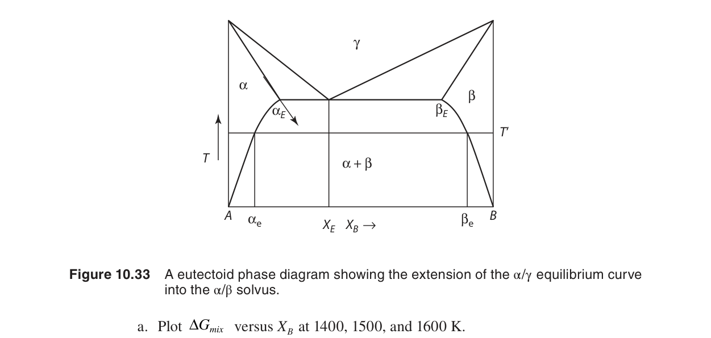